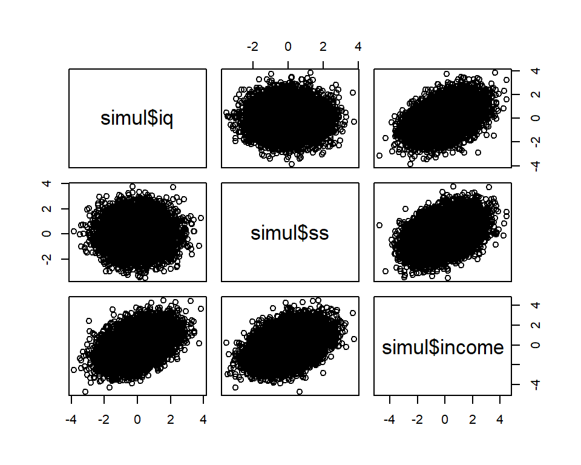
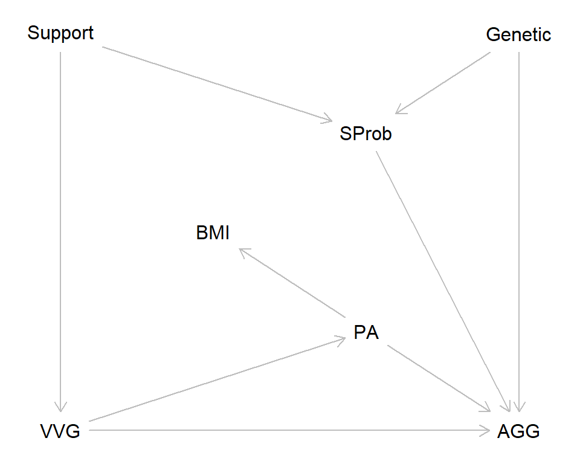

We have already generated a lot of random numbers using R. Today some more details on how this works, before we continue with our simulated experiment.
Computers cannot generate true randomness. What you get is pseudo-random numbers. Fortunately, these behave almost exactly as truly random numbers so most users, including us, will not notice the difference. A good thing we pseudo-randomness is that it allows us to make our analyses reproducible, using the set.seed() function:
set.seed(13) # Use any integer as argument
rnorm(5) # Random numbers## [1] 0.5543269 -0.2802719 1.7751634 0.1873201 1.1425261rnorm(5) # New numbers## [1] 0.4155261 1.2295066 0.2366797 -0.3653828 1.1051443set.seed(13)
rnorm(5) # Same as first above## [1] 0.5543269 -0.2802719 1.7751634 0.1873201 1.1425261Any script generating random numbers should set the seed at the beginning to assure that you or someone else can reproduce the results. The use of random number generators for statistical data analysis has increased markedly with the popularity of resampling methods, e.g., bootstrapping. If you are conducting such analyses, don’t forget to set the seed.
So far, we have used two random-number generators, sample() and rnorm(). The first let us sample with or without replacement from any vector (int, num, cha, or logi), irrespective of the distribution of values in that vector. The second samples from a normal distribution of infinite size (so sampling with or without replacement is not an issue). R has random number generators for a large set of probability distributions. This code uses three of these.
n <- 10^5
a <- rnorm(n)
b <- rexp(n)
c <- runif(n)
par(mfrow = c(1,3)) # Locate three subplots in one row
hist(a, main = 'Normal')
hist(b, main = 'Exponential')
hist(c, main = 'Uniform')
This is a causal model of the relationship between three variables, intelligence (iq), social skills (ss) and income:
\(iq\rightarrow{income}\leftarrow{ss}\).
In words: intelligence and social skills are independent and both influence income. To be more specific, we may assume that the causal effects leads to a linear relationship between social skills on the one hand and iq and ss on the other:
\(income = \beta_0 + \beta_1iq + \beta_2ss +\epsilon\)
Below a simulation of this linear model, using random numbers drawn from the standard normal distribution (mean = 0, sd = 1, default values of rnorm()).
set.seed(123)
# One possible set of beta weights
betaw <- c(0, 0.5, 0.5)
# Sample size
n = 10^4
# Random numbers representing iq
iq <- rnorm(n)
# Random numbers representing ss
ss <- rnorm(n)
# Income influenced by both iq and ss (added to 'baseline' income)
income <- betaw[1] + betaw[2] * iq + betaw[3] * ss + rnorm(n)
simul <- data.frame(iq, ss, income) # Put all in a data frame (not necessary)A scatter plot matrix and a correlation matrix suggest that our simulation is consistent with the model: iq and ss are independent, and both are positively correlated with income.
pairs(~simul$iq + simul$ss + simul$income) # Scatter plot matrix
round(cor(simul), 3) # Pearson coefficients of correlation (to 3 decimals)## iq ss income
## iq 1.000 0.006 0.424
## ss 0.006 1.000 0.406
## income 0.424 0.406 1.000As expected, a multiple regression model will recover the beta coefficients, plus minus some random error.
lm(simul$income ~ simul$iq + simul$ss)##
## Call:
## lm(formula = simul$income ~ simul$iq + simul$ss)
##
## Coefficients:
## (Intercept) simul$iq simul$ss
## -0.007081 0.520061 0.496815We may use this simulated data to illustrate Collider stratification bias (e.g., Elwert & Winship, 2014. Endogenous selection bias: the problem of conditioning on a collider variable. Annual Review of Sociology, 40, 31-53).
A researcher is interested in the relationship between intelligence and social skills. His hypothesis is that intelligent individuals tend to spend time on reading books and other solitary tasksand therefore have less time to develop their social skills. He therefore predicts a negative correlation between intelligence (iq) and social skills (ss), and test this on a sample of people with similar income. He considers this to be a strength of his designs as it controls for income by restriction. The code generates a plot that shows the relationship between iq and ss in the full sample (open symbols, black line) and restricted to high-income people (blue symbols, blue line).
plot(simul$iq, simul$ss, xlab = 'Intelligence (iq)', ylab = 'Social skills (ss)')
# Regression based on all data
full_model <- lm(simul$ss ~ simul$iq)
abline(full_model)
# Regression based on restricted data
points(simul$iq[simul$income > 2], simul$ss[simul$income > 2],
col = 'blue', pch = 16, cex = 0.5)
restricted_model <- lm(simul$ss[simul$income > 2] ~ simul$iq[simul$income > 2])
abline(restricted_model, col = 'blue')The restricted data (blue symbols and line) support the researcher’s hypothesis. But we know he’s wrong, because iq and ss are independent (by assumption). This is an example where controlling or adjusting for a potentially cofounding variable introduces bias. Note that it is true that there is a negative correlation between iq and ss in high-income individuals (in our simulated world); it’s the researcher’s causal hypothesis that is wrong, not his prediction of a negative correlation.
Click here for Script1b: A new simulation exercise, this time of data consistent with this Directed Acyclical Graph (DAG):
library(dagitty)
vvg_dag <- dagitty( "dag {
VVG -> AGG
VVG -> PA -> AGG
PA -> BMI
VVG <- Support -> SProb -> AGG
SProb <- Genetic -> AGG
}")
coordinates(vvg_dag) <- list(
x = c(VVG = 1, Support = 1, BMI = 2, PA = 3, SProb = 3, Genetic = 4, AGG = 4),
y = c(VVG = 5, Support = 1, BMI = 3, PA = 4, SProb = 2, Genetic = 1, AGG = 5))
plot(vvg_dag)
Exposure: Violent video games (VVG)
Outcome: Adult aggression (AGG)
Covariates: Physical activity (PA), Parental support (Support), School problems (SProb), BMI (BMI), Genetic factor (Genetic).
(We will have have completed our simulation of the randomized experiment at REX004), Click here for the final script).
© Mats E. Nilsson
Gösta Ekman Laboratory,
Department of Psychology, Stockholm University